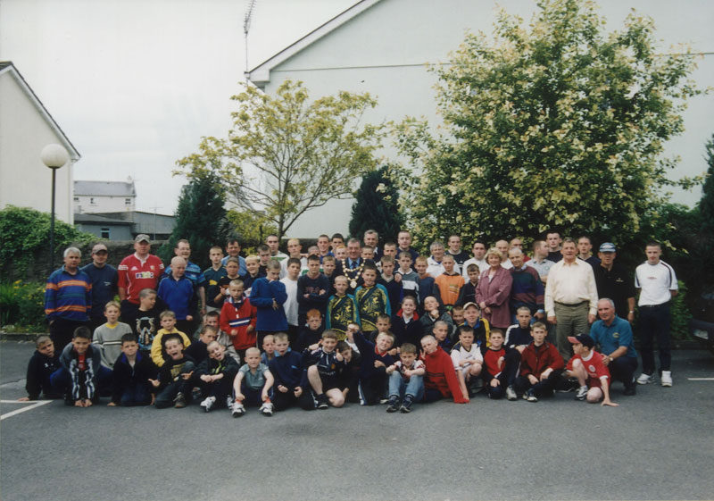

Welcome To The Club
Since its foundation in 1941, Our Lady's Boys' Club has been a constant source of guidance and inspiration to the youth of Galway, most specially those of working class background.
From their first nervous day of membership, right through their teens, and even after they have taken up the challenge of adult life, the spirit and watchful eye of the club is ever with them.

This wonderful structure which owes a great debt to the Jesuit Order, was founded by the late Father Leonard Shiel S.J., a priest of outstanding foresight, who, after some years as Spiritual Director, went on to further Pastoral work in England. His work there took him up and down the country in connection with the founding of Irish Missions to aid our immigrants.
The Presidency of ''Our Lady's'' is not just a bestowed honour, but in fact a time consuming, arduous and responsible task, pioneered by Peter O'Donoghue, for the first four years. After him came William J. Silke, Lorcan Kennan, Ambrose Roche, Desmond Kenny, Gerald Glynn, Paul O'Dea, Thomas Nevin, Desmond Kenny was President again from l961 to 1972. Next came James P. Cunningham who is President to date making ''Boys' Club'' history as the first ''Club Boy'' to come all the way up the ranks.